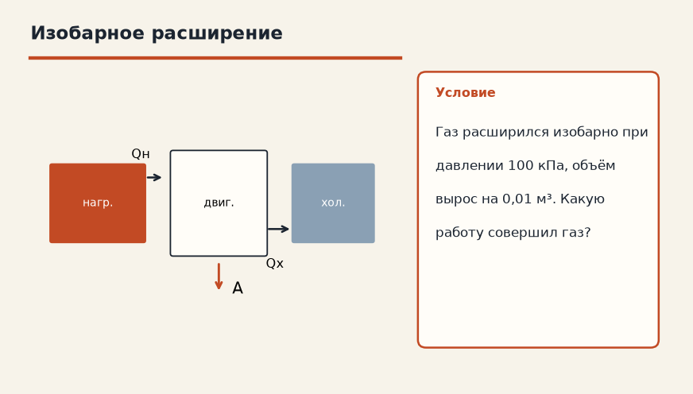
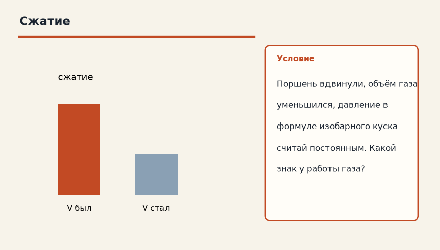

Термодинамика · Термодинамические процессы · 3.2
Работа газа
Лист для письменной работы: данные, перевод в СИ, искомая величина, ход решения, ответ. Ответов на листе нет.
1. Изобарное расширение
Газ расширился изобарно при давлении 100 кПа, объём вырос на 0,01 м³. Какую работу совершил газ?

2. Сжатие
Поршень вдвинули, объём газа уменьшился, давление в формуле изобарного куска считай постоянным. Какой знак у работы газа?

3. Изобара 200 кПа
Газ расширился изобарно при 200 кПа, объём вырос на 0,02 м³. Найдите работу газа.
4. Сжатие
Поршень вдвинули, объём уменьшился на 0,01 м³ при p = 100 кПа. Каков знак работы газа и её модуль?
5. Изохора
Объём газа не изменился. Чему равна работа газа в формуле A = p ΔV?
6. Имя процесса
Для какого процесса школьная формула A = p ΔV записана без дополнительных оговорок?
7. Полтора литра
Газ изобарно расширился на 1,5 л при давлении 2·10⁵ Па. Найдите работу газа.